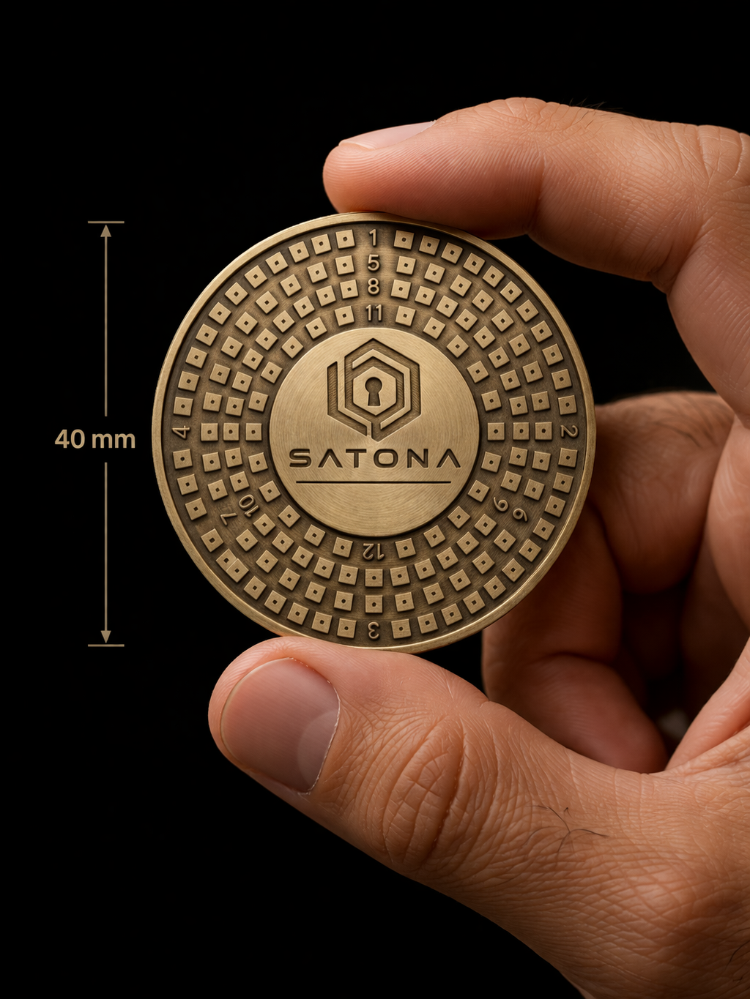
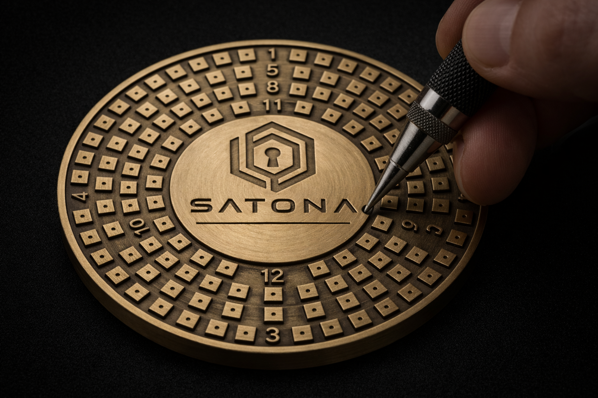

SATONA plate
A physical record for a digital key.
SATONA turns BIP39 word indexes into a compact binary pattern you can mark on a physical plate.




Product details
Only documented claims.
SATONA uses a BIP39 word-to-binary workflow and is intended as an offline physical recovery-record format.
- Compatibility
- BIP39 recovery phrases
- Encoding
- 11-bit representation per word
- Commercial details
- See information to confirm before publishing product claims.
Purchase FAQ
Clear before checkout.
What is included?
The repository does not reliably specify the exact kit contents. This must be confirmed before sale-page publication.
What are the delivery and return terms?
They are not documented in this repository and should be supplied before publication.
Is SATONA a wallet?
No. It is a physical backup format, not an electronic wallet or custody service.